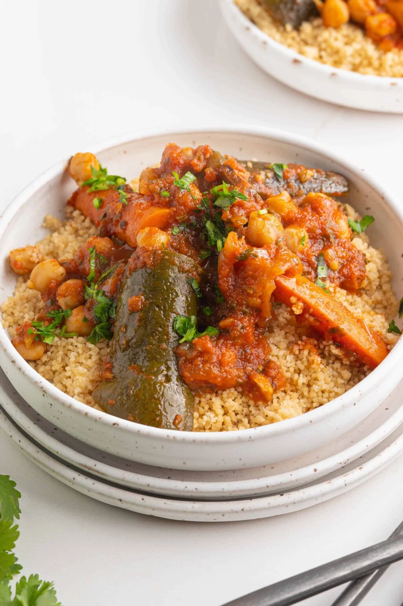

The Authentic Moroccan Couscous
A true Moroccan couscous must feature a vibrant mix of flawlessly steamed couscous, garnished with lamb, an assortment of simmered vegetables, and a richly seasoned broth. In Morocco, most of the families prepare it every Friday as a means to unite.

Ingredients
- water
- olive oil
- couscous
- lamb shank or shoulder, cut into chunks
- salt
- pepper
- pepper flakes
- ground ginger
- saffron, bloomed
- paprika
- yellow onion, diced
- carrot, cubed or half a butternut squash chopped into large chunks
- small eggplant, chopped into large chunks
- zucchina, chopped into large chunks
- turnip, parsnip, or daikon, chopped into large chunks
- parsley, minced
- cilantro, minced
- (can of) tomato sauce
- (canned) garbanzo beans, drained
How to Cook the Couscous, Lamb and Veggies
It wouldn't be fair to share this recipe without sharing the traditional method of preparation.
For the Couscous
In order to prepare Moroccan couscous the Moroccan way, you need a special tool called a couscoussier.
A couscoussier is essentially two stacked pots with a steamer on top. This tool can be found all over the Medinas in Morocco and is designed specifically for this recipe.
The design of the tool allows you to cook the meat, veggies and broth on the first level while steaming the couscous to perfection on the second level. It really does result in the most fluffy, perfect couscous you will ever have.
The Veggies and Lamb
- Start by browning the lamb on all sides in a large pot with some olive oil. The goal here is to get a solid crust on the outside of the lamb before adding all of the veggies.
- Add the spices and onion and sautéuntil translucent before tossing in the cubed carrots and root veggies. Cover with a lid to help the veggies soften up.
Once the carrots begin to soften, toss in the zucchini, eggplant, and cabbage.
- Sauté for another couple minutes before adding tomato sauce, water cilantro, and parsley.
Cook over medium heat, slightly covered until all vegetables are cooked through and the lamb reaches an internal temperature of 145.
Add in the garbanzo beans and mix thoroughly, continuing to cook just until they are warm and evenly incorporated.
- Serve the couscous first, then top carefully with vegetables, finally pouring the broth over the top. Garnish with minced cilantro.
P.S.:Now I know many of you, will use a spoon to eat it. But I'd recommend eating it with hand and combine some veggies with the cousous and work into a large, golf sized ball. It tastes a million times better!